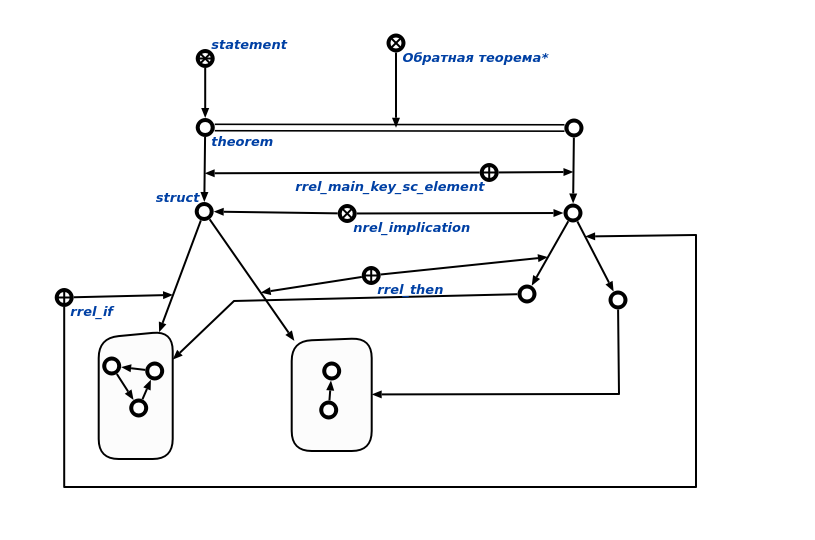

Команда пользовательского интерфейса для генерации обратной теоремы в заданном контексте предназначена для генерации обратной теоремы. Первым аргументом команды является теорема, для которой необходимо сгенерировать обратную теорему. Вторым аргументом является контекст в рамках которого необходимо построить обратную теорему.Результатом выполнения команды является вывод на экран исходной теоремы и обратную ей в рамках контекста.
